n=2
area=6
n=4
area=40
n=6
area=108
n=8
area=240

n=10
area=435
n=12
area=735
(Maurizio Morandi)
When k = 2, this becomes the problem of packing of squares in a loop. What are the smallest rectangles you can find for various n? When k ≥ 3, we need the squares to form the vertices of a k-regular graph. Can you find small packings for k=3? Can you find any packings for k=4 or k=5? Can you see why packings are impossible for k ≥ 6?
Claudio Baiocchi noted that kn must be even to form a n-vertex k-regular graph.
Claudio Baiocchi also noted that when k=3, an n=4 solution 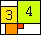 and an n=6 solution 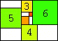 exist when corner contacts are allowed.
If we relax the condition that the squares form a connected group, there are solutions for k=0 and k=1 as well. The k=0 solutions are related to the solutions with no connectivity constraints.
Below are the smallest known packings:
n=2 area=6 | n=4 area=40 | 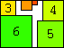 n=6 area=108 | 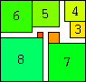 n=8 area=240 | n=10 area=435 | 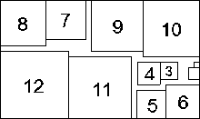 n=12 area=735 (Maurizio Morandi) |
| 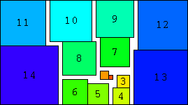 n=14 area=1125 | 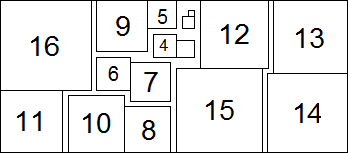 n=16 area=1647 (Maurizio Morandi) |
| 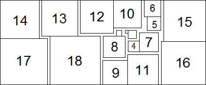 n=18 area=2294 (Maurizio Morandi) | 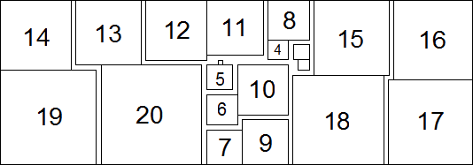 n=20 area=3102 (Maurizio Morandi) |
 n=3 area=15 | 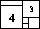 n=4 area=35 (Maurizio Morandi) | 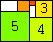 n=5 area=63 | 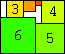 n=6 area=99 | 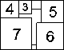 n=7 area=154 (Maurizio Morandi) |  n=8 area=224 (Claudio Baiocchi) | 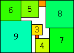 n=9 area=315 |
| 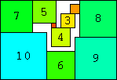 n=10 area=425 | 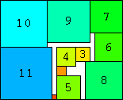 n=11 area=546 | 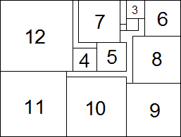 n=12 area=690 (Maurizio Morandi) |
| 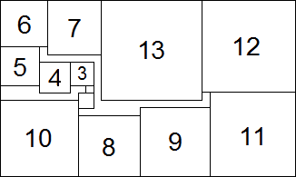 n=13 area=874 (Maurizio Morandi) | 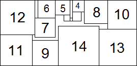 n=14 area=1081 (Maurizio Morandi) |
| 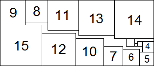 n=15 area=1320 (Maurizio Morandi) | 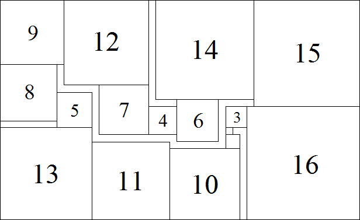 n=16 area=1581 (Maurizio Morandi) |
| 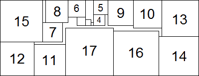 n=17 area=1890 (Maurizio Morandi) | 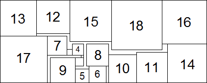 n=18 area=2220 (Maurizio Morandi) |
| 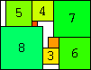 n=8 area=221 | 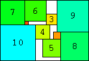 n=10 area=425 | 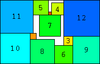 n=12 area=693 |
| 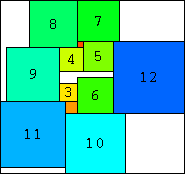 n=12 area=899 (Andrew Bayly) | 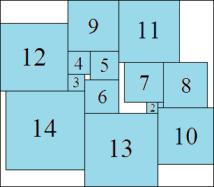 n=14 area=1254 (Maurizio Morandi) | 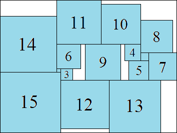 n=15 area=1452 (Maurizio Morandi) |
| 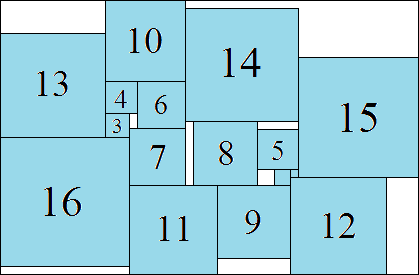 n=16 area=1768 (Maurizio Morandi) | 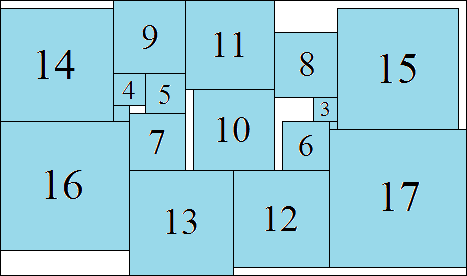 n=17 area=1972 (Maurizio Morandi) |
| 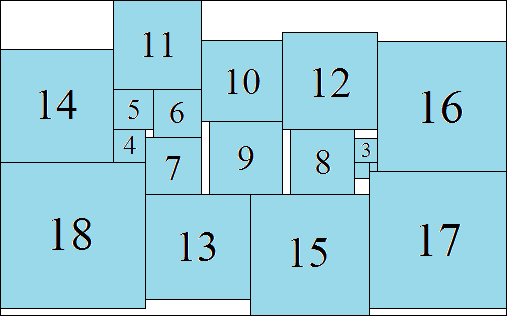 n=18 area=2457 (Maurizio Morandi) | 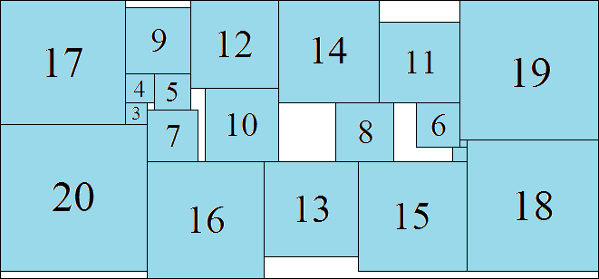 n=20 area=3116 (Maurizio Morandi) |
| 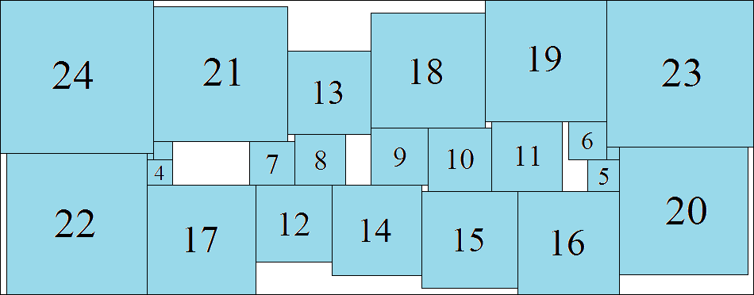 n=24 area=5428 (Maurizio Morandi) |
If you can extend any of these results, please e-mail me. Click here to go back to Math Magic. Last updated 6/30/16.